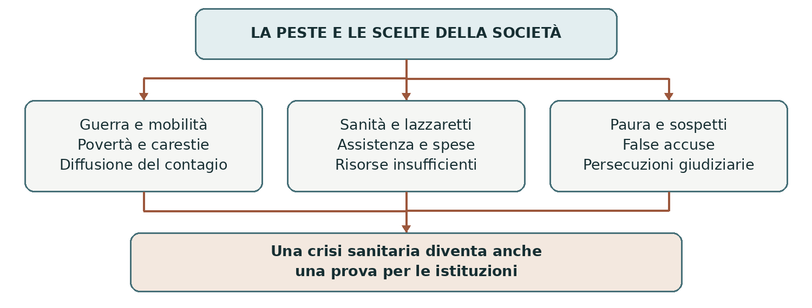

ITALIA • 1629–1631 E 1656
La peste del Seicento
La peste del Seicento colpì società che conoscevano già le epidemie e possedevano magistrature sanitarie, ospedali e lazzaretti. Eppure provocò nuove catastrofi. I casi di Milano nel 1630 e di Napoli nel 1656 mostrano quanto fosse difficile proteggere la popolazione durante guerre, crisi alimentari e intensi movimenti di persone.
0. Domanda generatrice
Perché le istituzioni sanitarie non riuscirono a impedire la catastrofe, e come reagirono le comunità?
In sintesi La risposta dipendeva dalle conoscenze disponibili, dalle risorse e dalle decisioni politiche, ma anche dalle disuguaglianze sociali.
1. Il mondo precedente
Dopo la peste del Trecento, la malattia era tornata più volte in Europa. Oggi sappiamo che il suo agente è il
batterio Yersinia pestis: le epidemie seicentesche appartengono alla lunga seconda pandemia. Allora
mancava questa conoscenza microbiologica; si discuteva di aria corrotta, contatti pericolosi e castighi
divini.
Le città avevano però accumulato esperienza. Le magistrature di sanità sorvegliavano provenienze e
spostamenti, imponevano isolamento e controllavano merci sospette. I lazzaretti separavano malati o
persone considerate a rischio. Queste pratiche potevano limitare i contagi, ma richiedevano denaro,
personale e collaborazione: non bastava emanare un ordine perché tutti potessero rispettarlo.
In sintesi Le società del Seicento disponevano di strumenti di prevenzione, ma non comprendevano pienamente la malattia e non avevano risorse illimitate.
2. Le fratture
Tra il 1629 e il 1631 la peste devastò diverse aree dell’Italia settentrionale. La guerra per la successione di Mantova, collegata alla guerra dei Trent’anni, favorì movimenti di eserciti, requisizioni e fughe. Il passaggio delle truppe imperiali contribuì alla diffusione: attribuire tutto a un popolo o a un singolo soldato sarebbe però una semplificazione.
Nel 1656 una nuova ondata colpì duramente Napoli e altre aree della penisola. Milano e Napoli erano entrambe inserite nei domini della monarchia spagnola, ma avevano amministrazioni e condizioni locali differenti. Non furono due momenti di un’unica emergenza ininterrotta: furono crisi distinte, dentro la lunga ricorrenza della peste.
In sintesi Guerra, mobilità e fragilità economica favorivano la diffusione; le caratteristiche locali influivano sulla capacità di reagire.
3. Attori, gruppi e conflitti
L’emergenza mise in conflitto esigenze sanitarie, attività economiche e sopravvivenza quotidiana.
| Attori | Obiettivi e interessi |
|---|---|
| Autorità politiche | Dovevano finanziare gli interventi e mantenere ordine, approvvigionamenti e attività economiche. |
| Magistrature sanitarie | Controllavano accessi, isolamento e luoghi di cura, incontrando resistenze e difficoltà operative. |
| Medici e assistenti | Curavano e assistevano con conoscenze limitate, affrontando il rischio di ammalarsi. |
| Lavoratori e famiglie | Subivano perdita di reddito, rincari, restrizioni e lutti; i più poveri avevano minori possibilità di proteggersi. |
| Comunità religiose | Offrivano assistenza e conforto; preghiere e riti accompagnavano la ricerca di spiegazioni. |
In sintesi La peste fu una crisi sanitaria e sociale: la possibilità di obbedire alle misure dipendeva anche dalle condizioni materiali.
4. Il processo storico
Milano: prevenzione, ritardi e paura
A Milano l’epidemia raggiunse il culmine nel 1630. Il riconoscimento del pericolo incontrò esitazioni: bloccare commerci e circolazione aveva costi elevati. Il lazzaretto accolse grandi quantità di persone, ma sovraffollamento e scarsità di mezzi resero l’assistenza difficilissima.
I monatti trasportavano malati e cadaveri: svolgevano un compito necessario e rischioso, anche se le fonti
raccontano abusi. Le processioni esprimevano una risposta religiosa collettiva; le riunioni di folla potevano
però moltiplicare i contatti proprio mentre si cercava di separarli.
Gli untori e la responsabilità della giustizia
Si diffuse la falsa convinzione che gli untori spargessero deliberatamente sostanze capaci di provocare la
peste. Nel 1630 il commissario di sanità Guglielmo Piazza e il barbiere Gian Giacomo Mora furono
accusati, sottoposti a tortura e condannati a morte. Le confessioni estorte non provavano il delitto.
La casa di Mora venne demolita e al suo posto fu eretta una colonna destinata a ricordarne l’infamia.
Nell’Ottocento Manzoni studiò il processo nella Storia della colonna infame, interrogando la
responsabilità dei giudici. Non si trattò soltanto di paura popolare: anche le istituzioni contribuirono a
trasformare un sospetto in persecuzione.
Napoli: l’assistenza nelle carte degli archivi
Nel 1656 Napoli affrontò una mortalità enorme, l’interruzione delle attività e la difficoltà di raccogliere i cadaveri. Le registrazioni dei banchi cittadini documentano pagamenti per strumenti chirurgici, personale e trasporto dei morti: dietro l’immagine della catastrofe emergono lavori, decisioni e spese concrete.
I due casi non vanno confusi con il racconto letterario. Manzoni scrisse i Promessi sposi nell’Ottocento,
usando fonti seicentesche: il romanzo non è una testimonianza diretta del 1630. Per ricostruire gli eventi
occorre confrontarlo con atti sanitari, processi, contabilità e cronache.
In sintesi Prevenzione e assistenza convivevano con ritardi, disuguaglianze e ricerca di colpevoli immaginari.
Lo snodo decisivo
Lo snodo interpretativo è il rapporto fra emergenza e decisione: conoscere poco una malattia non rende inevitabile ogni scelta politica o giudiziaria.
5. Le fonti in dialogo
Napoli, 1656: i pagamenti raccontano l’emergenza
L’archivio storico del Banco di Napoli conserva registrazioni di pagamenti effettuati durante l’epidemia, presentate dal museo ilCartastorie.
Contenuto — sintesi didattica: Una registrazione del 7 giugno riguarda strumenti per barbieri e chirurghi del lazzaretto di San Gennaro; un’altra, del 16 giugno, remunera soldati incaricati di rimuovere cadaveri. Sono tracce dell’organizzazione materiale della risposta alla peste.
Interpretazione e limiti: Le carte contabili attestano spese e incarichi. Non dimostrano da sole che l’assistenza fosse sufficiente e non consentono di calcolare tutte le vittime. Vanno confrontate con altre serie documentarie.
Domanda di lettura: Quali necessità collettive emergono dai pagamenti? Quali aspetti dell’esperienza dei malati restano invisibili?
Fonte: ilCartastorie, La peste del 1656
In sintesi Anche un documento economico può diventare una fonte per la storia della salute, del lavoro e delle istituzioni.
6. Conseguenze e nuovo assetto
Le epidemie provocarono perdite di popolazione, disgregazione di famiglie e difficoltà produttive. Intensità e tempi della ripresa variarono molto. Non basta richiamare la peste per spiegare tutte le trasformazioni dell’economia italiana del Seicento: contavano anche guerre, fiscalità e mutamenti dei traffici.
L’esperienza rafforzò l’importanza dell’amministrazione sanitaria, senza cancellare superstizioni e violenze. La memoria delle vittime e dei processi divenne inoltre materia di riflessione civile: studiare un’epidemia significa comprendere insieme la malattia e le responsabilità umane.
In sintesi La crisi lasciò effetti demografici, economici e culturali differenti nei diversi territori.
7. Conclusione
Le istituzioni sanitarie non impedirono la catastrofe perché agirono entro limiti scientifici, economici e politici. Il confronto fra Milano e Napoli mostra tuttavia che le società non furono passive: organizzarono assistenza, presero decisioni e, in alcuni casi, commisero gravi ingiustizie.
Sintesi finale La peste tornò in più ondate dopo il Trecento. Guerra e mobilità favorirono l’epidemia settentrionale del 1629–1631. A Milano l’emergenza alimentò anche la persecuzione degli untori. A Napoli nel 1656 i documenti mostrano il lavoro dell’assistenza. La ricostruzione storica distingue malattia, scelte politiche e memoria letteraria.
Per studiare e collegare
Coordinate essenziali
Spazio: Italia settentrionale e Regno di Napoli. Tempi: epidemia del 1629–1631 e ondata del 1656. Collegamenti: guerra dei Trent’anni, amministrazione degli Stati, Manzoni.
Saperi irrinunciabili
1. Le epidemie seicentesche furono ritorni della peste, non una malattia nuova.
2. Le autorità disponevano già di magistrature sanitarie e lazzaretti.
3. La guerra di Mantova favorì spostamenti e diffusione nell’Italia settentrionale.
4. Milano subì una fase particolarmente grave nel 1630.
5. Le restrizioni avevano costi economici distribuiti in modo diseguale.
6. Gli untori furono accusati sulla base di credenze e prove inattendibili.
7. Piazza e Mora furono vittime di un processo ingiusto.
8. Napoli fu devastata dalla peste nel 1656.
9. Le carte dei banchi documentano attività e spese dell’emergenza.
10. Il romanzo di Manzoni è una rielaborazione ottocentesca, non una cronaca diretta.
Mappa concettuale

Lo schema collega condizioni di diffusione e risposte umane: queste ultime non avevano tutte lo stesso valore o la stessa efficacia.
Strumenti e attività
Linea del tempo ragionata
| Quando | Che cosa cambia |
|---|---|
| XV–XVI secolo | Si sviluppano lazzaretti e magistrature sanitarie. |
| 1629 | Guerra e movimenti di eserciti favoriscono la diffusione al Nord. |
| 1630 | Gravissima epidemia a Milano; processo a Piazza e Mora. |
| 1631 | La fase più intensa si attenua in molte aree settentrionali. |
| 1656 | Peste a Napoli e in altri territori italiani. |
| 1840–1842 | Edizione illustrata dei Promessi sposi con la Storia della colonna infame. |
Vocabolario essenziale
Lazzaretto. Struttura per l’isolamento e l’assistenza durante le epidemie.
Magistratura sanitaria. Ufficio pubblico incaricato della tutela della salute collettiva.
Untore. Presunto diffusore intenzionale del contagio, figura centrale nelle false accuse.
Fonte contabile. Documento che registra entrate, uscite o pagamenti.
Attività di comprensione
1. Confronta Milano e Napoli indicando due somiglianze e due differenze.
2. Spiega perché una confessione ottenuta con la tortura non costituisce una prova affidabile.
3. Distingui ciò che apprendiamo da un romanzo storico, da un processo e da una registrazione di pagamento.
Fonti e approfondimenti
Approfondimento di storia per la classe terza. Fonti e studi per verificare e ampliare la lettura.
ilCartastorie • La peste del 1656
Treccani, Dizionario Biografico • Giovanni Giacomo Mora
Treccani, Dizionario di Storia • Lazzaretto